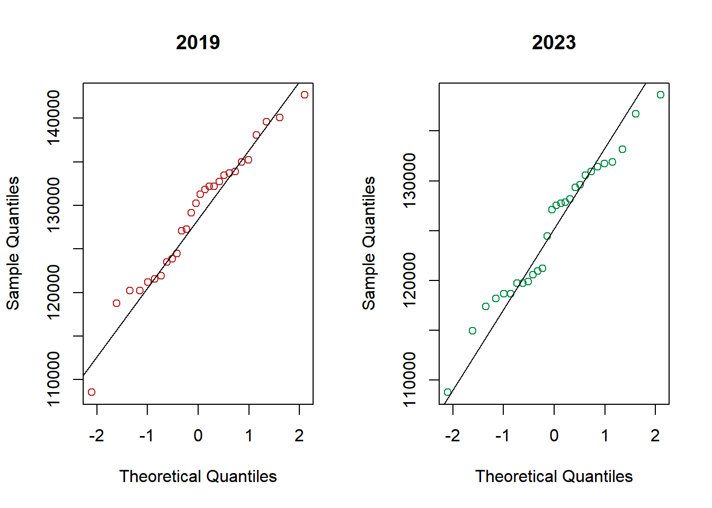
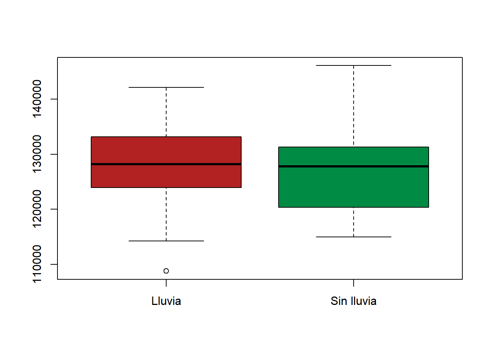
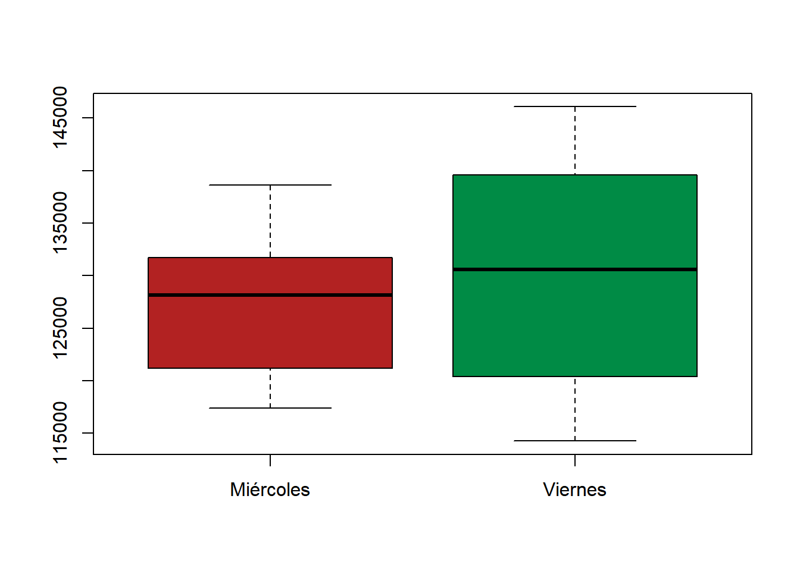
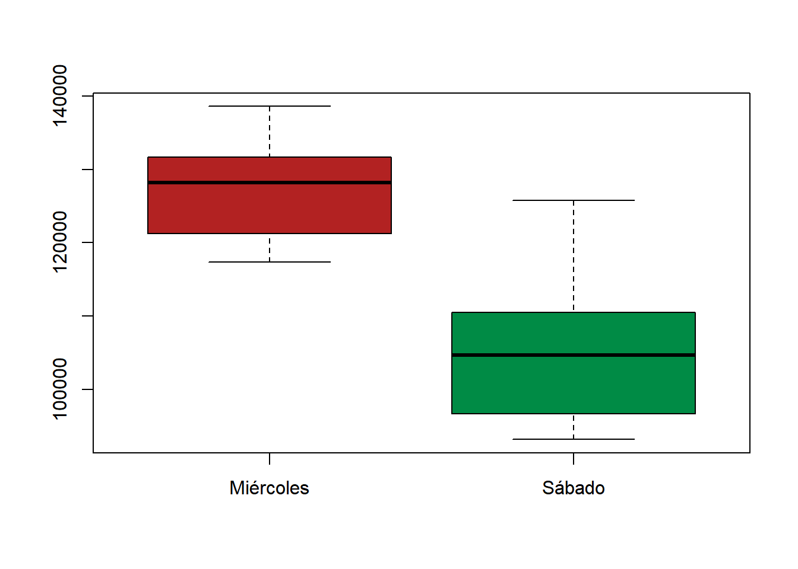

Código
rm(list=ls())
# Librerías necesarias
require(ggplot2)
require(tidyverse)
require(ggfortify)
require(plotly)
require(vroom)
require(effsize)
require(ggmap)
require(leaflet)
require(devtools)
options(scipen = 999)Presentamos un ejemplo para test de hipótesis a partir de datos reales de clima y de flujo vehicular de la Ciudad Autónoma de Buenos Aires.
A continuación, se muestran algunos posibles análisis para datos de flujo vehicular en CABA incorporando, en algunos casos, variables climáticas.
rm(list=ls())
# Librerías necesarias
require(ggplot2)
require(tidyverse)
require(ggfortify)
require(plotly)
require(vroom)
require(effsize)
require(ggmap)
require(leaflet)
require(devtools)
options(scipen = 999)Los datos de flujo vehicular de la Ciudad de Buenos Aires reportan, por hora, la cantidad de vehículos registrados por radares ubicados en diferentes puntos de algunas autopistas de la ciudad.
En el siguiente mapa se muestra el total de flujo vehicular para cada uno de los radares durante 2019.
# importo datos de flujo vehicular 2019
flujo19 <-
vroom("./fuente/03_test_hipotesis/flujo-vehicular-por-radares-2019.csv") %>%
group_by(disp_ubicacion) %>%
summarise(n = sum(cantidad),
lat = mean(lat),
long = mean(long)) %>%
drop_na()
paleta <- colorQuantile("Greys", flujo19$n, n = 6)
# Mapa
mapa19 <- flujo19 %>%
leaflet(options = leafletOptions(attributionControl = FALSE)) %>%
addProviderTiles("CartoDB.VoyagerLabelsUnder",
options = providerTileOptions(opacity = 0.8)) %>%
addCircleMarkers(
lng = ~ long,
lat = ~ lat,
fillOpacity = 0.9,
radius = ~ 100 * n / (sum(n)),
weight = 1,
color = ~ paleta(n),
stroke = FALSE
)
mapa19Como puede observarse en el mapa, el radar ubicado en la Autopista Lugones altura ESMA (RD 171), es el que mayor flujo registra para el año considerado. Los datos de 2023, que al momento de producir este documento solo se encuentran disponibles para el primer trimestre del año, exhiben una tendencia similar (a efectos creativos, se representan sobre un mapa en formato acuarelas: conocer más acá).
# importo datos de flujo vehicular 2023
flujo23 <-
vroom("./fuente/03_test_hipotesis/flujo-vehicular-por-radares-2023.csv")
# La long y la lat está mal registrada
corregir_lat <- which(flujo23$lat > -500000)
flujo23$lat[corregir_lat] <- flujo23$lat[corregir_lat] / 10000
flujo23$lat[-corregir_lat] <- flujo23$lat[-corregir_lat] / 100000
corregir_long <- which(flujo23$long > -1000000)
flujo23$long[corregir_long] <- flujo23$long[corregir_long] / 10000
flujo23$long[-corregir_long] <- flujo23$long[-corregir_long] / 100000
flujo23 <- flujo23 %>%
group_by(disp_ubicacion) %>%
summarise(n = sum(cantidad),
lat = mean(lat),
long = mean(long)) %>%
drop_na()
paleta <- colorQuantile("Greys", flujo23$n, n = 6)
# Mapa
mapa23 <- flujo23 %>%
leaflet(options = leafletOptions(attributionControl = FALSE)) %>%
addProviderTiles("Stamen.Watercolor",
options = providerTileOptions(opacity = 0.8)) %>%
addCircleMarkers(
lng = ~ long,
lat = ~ lat,
fillOpacity = 0.9,
radius = ~ 100 * n / (sum(n)),
weight = 1,
color = ~ paleta(n),
stroke = FALSE
)
mapa23Para lo que sigue, trabajamos con el dataset reducido flujovehicular.csv en el que se incluyen datos del flujo vehicular de los días hábiles del primer trimestre de 2019 y de 2023 para el radar RD 171 ubicado en la Autopista Lugones, altura ESMA, sentido A.
El dataset flujo-vehicular.csv se encuentra acá. A continuación, se muestran 10 datos de dicho conjunto.
datos <- read_csv("./fuente/03_test_hipotesis/flujo-vehicular.csv")| fecha | n19 | n23 |
|---|---|---|
| 01-02 | 108550 | 108794 |
| 01-03 | 118754 | 114959 |
| 01-04 | 120250 | 117394 |
| 01-09 | 49684 | 118142 |
| 01-10 | 121533 | 119916 |
| 01-11 | 123864 | 120939 |
| 01-16 | 27560 | 119623 |
| 01-17 | 121897 | 118654 |
| 01-18 | 123497 | 119748 |
| 01-23 | 121223 | 118691 |
Cada observación corresponde al flujo total detectado por ese radar de un día que resultó hábil tanto en 2019 como en 2023. La elección de los años responde a lo siguiente: - los datos de 2020 y 2021 van a encontrarse influenciados por las restricciones de circulación de la pandemia de COVID-19 y la paulatina vuelta a la presencialidad, - los datos de 2022 no se encuentran disponibles para el año completo, sino para algunos meses al inicio y al fin del año.
Como puede verse en el siguiente gráfico, existe una tendencia temporal que incide en el flujo vehicular del trimestre para ambos años.
Las observaciones que se encuentran más alejadas de la recta identidad, corresponden a los días 20 y 21 de febrero de 2023, ambos feriados de carnaval, y a los días 9 y 16 de enero de 2019, ambos lunes, de posible retorno a la ciudad por recambio turístico. Removemos estas observaciones para lo que sigue.
Los datos exhiben una estacionalidad que, naturalmente, afecta al usual supuesto de independencia: el flujo es creciente, para ambos años, a medida que transcurren los días durante el primer trimestre. Sumado a eso, el emparejamiento de los días por su simple correspondencia de fecha podría no ser comparable, salvo excepciones o hitos de cada año.
Por ejemplo, la observación del 24 de enero de 2019 podría no ser comparable con la equivalente de 2023, aunque sí, quizás, con el de alguna fecha próxima a ella. Por la limitación de los datos disponibles para 2023, no es posible considerar otro tipo de agrupamientos. Sin embargo y pese a esto, el flujo vehicular registrado por ese radar parecer ser sistemáticamente menor en 2023 en relación con 2019.
Bajo ciertos reparos, puede ponerse a prueba la hipótesis anterior, asumiendo que algo de la estacionalidad observada puede resolverse apareando los datos. Más precisamente, un gráfico de las diferencias entre el flujo de 2019 y el de 2023 para los días considerados parece dar cuenta de tal efecto.
Parte de la estacionalidad parece haberse corregido y la media observada para las diferencias, que debería ser cercana a 0 en caso de no haber diferencias, se observa desplazada sugiriendo un flujo promedio mayor en 2019.
Realizamos un test t para muestras apareadas a nivel \(1\%\).

Paired t-test
data: flujosout$n19 and flujosout$n23
t = 4.9782, df = 27, p-value = 0.0000323
alternative hypothesis: true mean difference is not equal to 0
99 percent confidence interval:
1651.119 5795.881
sample estimates:
mean difference
3723.5
Cohen's d
d estimate: 0.4958838 (small)
95 percent confidence interval:
lower upper
0.2842526 0.7075150 En efecto, el \(p-\)valor es \(0.0000323\), y a partir de esta muestra y bajo las consideraciones ya mencionadas, rechazaríamos el supuesto de igualdad de flujos medios para ambos años, durante días hábiles del primer trimestre en ese radar. El tamaño del efecto parece ser moderado.
Para lo que sigue, trabajamos con el dataset reducido flujoclima de la librería datosIC en el que se incluyen datos del flujo vehicular del primer trimestre de 2023 para el radar RD 171 ubicado en la Autopista Lugones, altura ESMA, sentido A, junto con datos de temperatura promedio y precipitaciones. A continuación, se muestran 10 datos de dicho conjunto.
devtools::install_github("daniellaparada/datosIC")
library(datosIC)
datos <- flujoclimaUn gráfico del flujo vehicular por tipo de día y según nivel de precipitaciones, parece mostrar lo esperado: el el flujo vehicular en ese punto de la ciudad es mayor los días de semana que los fines de semana. Sin embargo, no parece haber una tendencia notable que impacte en el flujo vehicular a partir de las precipitaciones. Dicha tendencia podría ser creciente, asumiendo que los días en que se registran mayores niveles de precipitaciones más personas utilizan el auto; o bien decreciente, sugiriendo que hay menor tránsito vehicular porque las personas prefieren suspender aquellas actividades fuera de sus hogares que no sean esenciales.
flujoclima <- datos
ggplotly(
ggplot(
data = filter(flujoclima),
aes(
x = factor(
dia,
level = c(
"lunes",
"martes",
"miércoles",
"jueves",
"viernes",
"sábado",
"domingo"
)
),
y = n,
color = tipo_dia,
key = prcp
)
) +
geom_point(aes(size = prcp)) +
labs(
x = "Días de la semana",
y = "Flujo vehicular Lugones (Esma)",
color = "Tipo de día",
size = "Precipitaciones"
) +
scale_color_manual(values = c("Fin de semana" = "deeppink2", "Lunes a viernes" = "dodgerblue2")) +
theme_classic(),
source = "select",
tooltip = c("key")
)Algunas preguntas que pueden surgir a partir del gráfico son, por ejemplo:
Siempre, claro, recordando que estamos restringiendo el análisis al flujo vehicular detectado por el radar RD171, en la autopista Lugones, altura Esma.
Como hicimos antes, para lo que sigue, descartamos las observaciones correspondientes a los días 20 y 21 de febrero y 24 de marzo, únicos feriados nacionales del trimestre.
Del total de días hábiles, entonces, tenemos \(19\) observaciones que resultan de días de semana con lluvia, y \(43\) observaciones para días de semana sin lluvia.
# Días de semana con lluvia: 19 datos
datos1 <- flujoclima %>%
filter(prcp > 0,
tipo_dia == "Lunes a viernes")
# Días de semana sin lluvia: 43 datos
datos2 <- flujoclima %>%
filter(prcp == 0,
tipo_dia == "Lunes a viernes")
boxplot(
datos1$n,
datos2$n,
col = c("firebrick", "springgreen4"),
names = c("Lluvia", "Sin lluvia")
)
Realizamos un test t para diferencia de medias.
# Test para diferencia de medias
t.test(
x = datos1$n,
y = datos2$n,
alternative = "two.sided",
mu = 0,
paired = FALSE,
conf.level = 0.95
)
Welch Two Sample t-test
data: datos1$n and datos2$n
t = 0.3956, df = 29.359, p-value = 0.6953
alternative hypothesis: true difference in means is not equal to 0
95 percent confidence interval:
-3883.205 5746.884
sample estimates:
mean of x mean of y
127948.4 127016.6 cohen.d(d = datos1$n, f = datos2$n, paired = FALSE)
Cohen's d
d estimate: 0.1173876 (negligible)
95 percent confidence interval:
lower upper
-0.4340511 0.6688262 Con un \(p-\)valor de \(0.6953\), no hay evidencia en la muestra para rechazar la hipótesis de igualdad de flujos medios. Es decir, a partir de la evidencia provista por la muestra, no es posible descartar que el flujo vehicular medio en días sin lluvia difiera del flujo medio cuando llueve.
Podemos hacer otro test para ver si hay diferencia significativa para suponer que el flujo medio de los miércoles difiere del de los lunes. Las observaciones son menos, ya que en el primer trimestre solo se registran \(13\) miércoles y \(12\) viernes, considerando que se removió el 24 de marzo.
# Días de semana con lluvia: 13 datos
datos1 <- flujoclima %>%
filter(dia == "miércoles")
# Días de semana sin lluvia: 13 datos
datos2 <- flujoclima %>%
filter(dia == "viernes")
boxplot(
datos1$n,
datos2$n,
col = c("firebrick", "springgreen4"),
names = c("Miércoles", "Viernes")
)
t.test(
x = datos1$n,
y = datos2$n,
alternative = "two.sided",
mu = 0,
paired = FALSE,
conf.level = 0.95
)
Welch Two Sample t-test
data: datos1$n and datos2$n
t = -0.58982, df = 17.355, p-value = 0.5629
alternative hypothesis: true difference in means is not equal to 0
95 percent confidence interval:
-9601.871 5401.114
sample estimates:
mean of x mean of y
127669.5 129769.9 cohen.d(d = datos1$n, f = datos2$n, paired = FALSE)
Cohen's d
d estimate: -0.2410676 (small)
95 percent confidence interval:
lower upper
-1.0721910 0.5900558 Nuevamente, y con un \(p-\)valor de \(0.5629\), concluimos que no hay evidencia en la muestra para rechazar la hipótesis de igualdad de flujos medios entre esos días, algo que al “ojo desnudo” podría parecer significativo. Ocurre, sin embargo, que la variabilidad exhibida en los flujos de los días viernes, parece ser mayor, como se observa en ambos gráficos previos. Una comparación que sí esperaría conducir a un rechazo de la igualdad de flujos medios podría ser la de miércoles y sábados.
# Días de semana con lluvia: 13 datos
datos1 <- flujoclima %>%
filter(dia == "miércoles")
# Días de semana sin lluvia: 13 datos
datos2 <- flujoclima %>%
filter(dia == "sábado")
boxplot(
datos1$n,
datos2$n,
col = c("firebrick", "springgreen4"),
names = c("Miércoles", "Sábado")
)
t.test(
x = datos1$n,
y = datos2$n,
alternative = "two.sided",
mu = 0,
paired = FALSE,
conf.level = 0.95
)
Welch Two Sample t-test
data: datos1$n and datos2$n
t = 6.9421, df = 18.759, p-value = 0.000001382
alternative hypothesis: true difference in means is not equal to 0
95 percent confidence interval:
15757.64 29377.77
sample estimates:
mean of x mean of y
127669.5 105101.8 cohen.d(d = datos1$n, f = datos2$n, paired = FALSE)
Cohen's d
d estimate: 2.82569 (large)
95 percent confidence interval:
lower upper
1.655577 3.995802 El test arroja un \(p-\)valor prácticamente nulo: podemos concluir que hay evidencia en la muestra para rechazar la hipótesis de igualdad de flujos medios entre los días miércoles y los días sábados. Además, el tamaño del efecto es grande.
A continuación, se detallan aspectos de los datasets que conformaron el dataset reducido para el desarrollo del ejemplo, a la vez que se incluyen las fuentes de los datos y el código utilizado para pre-procesarlo con la sintaxis de tidyverse. De esta forma, puede fácilmente replicarse y/o adaptarse si así se lo desea.
El dataset reducido con el que se desarrolló el ejemplo y que surge de tal pre-procesamiento, es flujoclima de la librería datosIC.
Los datos de este ejemplo corresponden a datos de clima del año 2023 tomados de la base de datos meteorológicos y climáticos de MeteoStat (disponibles acá). En particular, se consideran los datos de la estación meteorológica de Aeroparque (ID 87582) y un conjunto reducido de variables para el período considerado.
clima <-
read_csv("./fuente/03_test_hipotesis/registro_tiempo_aeroparque_2023.csv") %>%
select(c(1:5, 7:8, 10))Los datos de este ejemplo corresponden a datos de flujo vehicular registrado en ciertos radares de AUSA, por hora, en la Ciudad de Buenos Aires para los años 2019 y 2023 (disponibles acá).
Algunas consideraciones, a la fecha, respecto de estos datos:
Los datasets se encuentran disponibles para los años 2019 a 2023.
No todos tienen el mismo formato para el tratamiento de la fecha.
Los datos de 2022 no están completos.
Los datos de 2023 se encuentran disponibles al primer trimestre.
Las coordenadas que georeferencian cada uno de los radares se encuentran “sucias” en los datos de 2023. En este capítulo se propuso una posible limpieza.
flujoclimaPara reducir los datos al estudio de interés, se crea un dataset conjunto, flujoclima, a partir de los datos de flujo vehicular del primer trimestre de 2023 para el radar RD171 y de clima, en el que se dispone de las siguientes variables.
fecha: fecha, en el formato mes-día.n: flujo vehicular de la fecha indicada.tavg: temperatura media (°C) registrada en esa fecha.prcp: precipitaciones (mm) registrada en esa fecha.dia: día de la semana de la fecha indicada.tipo_dia: tipo de día (Fin de semana o Lunes a viernes) de la fecha indicada.El dataset flujoclima está disponible en la librería datosIC.
library(datosIC)
flujoclima| fecha | n | tavg | prcp | dia | tipo_dia |
|---|---|---|---|---|---|
| 01-01 | 74642 | 22.8 | 0.0 | domingo | Fin de semana |
| 01-02 | 108794 | 22.7 | 9.9 | lunes | Lunes a viernes |
| 01-03 | 114959 | 25.7 | 0.0 | martes | Lunes a viernes |
| 01-04 | 117394 | 23.8 | 0.0 | miércoles | Lunes a viernes |
| 01-05 | 120350 | 24.0 | 0.0 | jueves | Lunes a viernes |
| 01-06 | 118283 | 26.3 | 0.0 | viernes | Lunes a viernes |
| 01-07 | 94076 | 26.1 | 0.0 | sábado | Fin de semana |
| 01-08 | 92560 | 25.7 | 0.0 | domingo | Fin de semana |
| 01-09 | 118142 | 25.3 | 0.0 | lunes | Lunes a viernes |
| 01-10 | 119916 | 25.4 | 0.0 | martes | Lunes a viernes |
sessionInfo()R version 4.2.3 (2023-03-15 ucrt)
Platform: x86_64-w64-mingw32/x64 (64-bit)
Running under: Windows 10 x64 (build 22621)
Matrix products: default
locale:
[1] LC_COLLATE=Spanish_Argentina.utf8 LC_CTYPE=Spanish_Argentina.utf8
[3] LC_MONETARY=Spanish_Argentina.utf8 LC_NUMERIC=C
[5] LC_TIME=Spanish_Argentina.utf8
attached base packages:
[1] stats graphics grDevices utils datasets methods base
other attached packages:
[1] datosIC_0.0.0.9000 devtools_2.4.5 usethis_2.1.6 leaflet_2.1.2
[5] ggmap_3.0.2 effsize_0.8.1 vroom_1.6.1 plotly_4.10.1
[9] ggfortify_0.4.16 lubridate_1.9.2 forcats_1.0.0 stringr_1.5.0
[13] dplyr_1.1.2 purrr_1.0.1 readr_2.1.4 tidyr_1.3.0
[17] tibble_3.2.1 tidyverse_2.0.0 ggplot2_3.4.2
loaded via a namespace (and not attached):
[1] bitops_1.0-7 fs_1.6.1 bit64_4.0.5
[4] RColorBrewer_1.1-3 httr_1.4.5 tools_4.2.3
[7] profvis_0.3.7 utf8_1.2.3 R6_2.5.1
[10] lazyeval_0.2.2 colorspace_2.1-0 urlchecker_1.0.1
[13] withr_2.5.0 sp_1.6-1 tidyselect_1.2.0
[16] gridExtra_2.3 prettyunits_1.1.1 processx_3.8.0
[19] curl_5.0.0 bit_4.0.5 compiler_4.2.3
[22] cli_3.6.1 labeling_0.4.2 scales_1.2.1
[25] callr_3.7.3 digest_0.6.31 rmarkdown_2.21
[28] jpeg_0.1-10 pkgconfig_2.0.3 htmltools_0.5.5
[31] sessioninfo_1.2.2 fastmap_1.1.1 htmlwidgets_1.6.2
[34] rlang_1.1.0 rstudioapi_0.14 shiny_1.7.4
[37] generics_0.1.3 farver_2.1.1 jsonlite_1.8.4
[40] crosstalk_1.2.0 magrittr_2.0.3 Rcpp_1.0.10
[43] munsell_0.5.0 fansi_1.0.4 lifecycle_1.0.3
[46] stringi_1.7.12 yaml_2.3.7 pkgbuild_1.4.0
[49] plyr_1.8.8 grid_4.2.3 parallel_4.2.3
[52] promises_1.2.0.1 crayon_1.5.2 miniUI_0.1.1.1
[55] lattice_0.21-8 hms_1.1.3 knitr_1.42
[58] ps_1.7.4 pillar_1.9.0 pkgload_1.3.2
[61] glue_1.6.2 evaluate_0.20 leaflet.providers_1.9.0
[64] data.table_1.14.8 remotes_2.4.2 png_0.1-8
[67] vctrs_0.6.1 tzdb_0.3.0 httpuv_1.6.9
[70] RgoogleMaps_1.4.5.3 gtable_0.3.4 cachem_1.0.7
[73] xfun_0.39 mime_0.12 xtable_1.8-4
[76] later_1.3.0 viridisLite_0.4.2 memoise_2.0.1
[79] timechange_0.2.0 ellipsis_0.3.2 Datos de flujo vehicular por radares AUSA (datos disponibles acá).
MeteoStat (info disponible acá y datos disponibles acá).
Mapa de CABA datos disponibles acá.